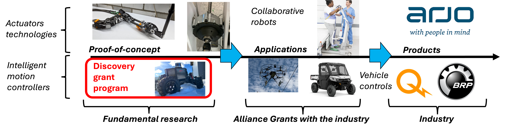

Abstract
Learning-based policies in robotics currently suffer from a lack of generalization, requiring costly retraining for new robots, environments, or tasks. This research program addresses this bottleneck by introducing a novel paradigm based on dimensional analysis and the Buckingham Π Theorem.
The program focuses on developing inherently scalable dimensionless policies and similarity metrics to identify 'regimes of behavior' where control policies can be transferred between different robotic systems (e.g., from an autonomous ATV to a truck) without performance loss. This work aims to move beyond single-use black-box solutions toward universal representations of motion control skills.
Program Objectives
- Robustness of Transfers for Quasi-Similar Systems: Quantifying how much robot parameters can vary while still permitting effective policy transfer without retraining.
- Transfer Quality Prediction Tools: Developing similarity metrics and dimensionality reduction schemes to predict transfer success for high-dimensional systems (e.g., humanoids).
- Shared Learning for Heterogeneous Robots: Enabling a fleet of diverse robots to collectively learn from pooled physical experiences based on shared regimes of behavior.
Related Publications
Project Media

